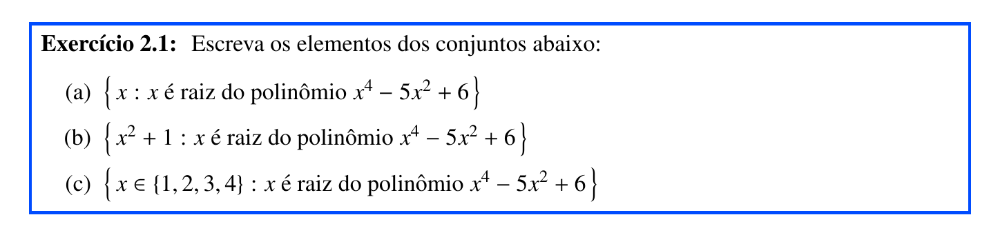

| \(x\) | \(x^2 + 1\) |
|---|---|
| \(-\sqrt{3}\) | \(4\) |
| \(-\sqrt{2}\) | \(3\) |
| \(\sqrt{2}\) | \(3\) |
| \(\sqrt{3}\) | \(4\) |
2 Teoria dos Conjuntos
2.1 Conjuntos, elementos e pertinência

Resposta (a)
Precisamos usar algum método para resolver a equação
\[ x^4 - 5x^2 + 6 = 0 \]
Uma maneira: se fizermos \(y = x^2\), a equação fica
\[ y^2 - 5y + 6 = 0 \]
que tem raízes \(y = 2\) e \(y = 3\).
Daí, resolvendo \(2 = x^2\), temos \(x = \pm\sqrt2\).
E resolvendo \(3 = x^2\), temos \(x = \pm\sqrt3\).
Escrevendo o conjunto como uma enumeração dos elementos:
\[ \left\{ -\sqrt3, -\sqrt2, \sqrt2, \sqrt3 \right\} \]
Resposta (b)
Preste atenção: agora, não queremos as raízes, mas sim os valores de \(x^2 + 1\), onde \(x\) assume os valores das raízes.
O conjunto poderia ser escrito como
\[ \left\{ x^2 + 1 : x \in \{ -\sqrt3, -\sqrt2, \sqrt2, \sqrt3 \} \right\} \]
Calculando os valores de \(x^2 + 1\), temos:
Na tabela acima, há elementos repetidos, mas isto não pode acontecer em um conjunto. Então, a resposta é
\[ \left\{ 3, 4 \right\} \]